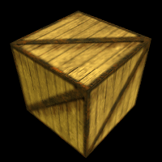

方向光与环境光
方向光与环境光
没有大自然的“上帝算法”，计算机中光照的效果也是要计算的。对于目前的着色器，光照计算也分“逐顶点”和“逐片元”（或者说“逐像素”）。逐顶点计算光照和前面计算颜色、纹理相似，相邻顶点之间的像素通过插值计算得到，相当于把顶点之间理解成“平”的，这对于不平的面效果就会差些，于是会有逐片元的计算方法。
这一节我们对那个板条箱做逐顶点的光照，板条箱本来就是平的，逐顶点效果就挺好。
我们先了解计算机图形中的两种光：
- 方向光（directional light）：从一个方向照过来的绝对平行的光。
- 环境光（ambient light）：类似于真实世界中周围环境比如墙壁、空气灰尘散射之后，均匀地从各个方向照过来的光。
物体表面对光的两种反射：
- 漫反射（Diffuse）：无论什么角度照射，都会朝所有方向反射；无论什么角度观看，亮度只取决于入射角（光线与入射表面法线的夹角）——入射角越大看上去越暗。
- 镜面反射（Specular）：看到的物体亮度取决于视线是否沿着反射光线。通过调整镜面反射的程度模拟诸如木头、玻璃、金属等不同类型的表面。
Phong光照模型把这些类型综合在一起，所有的光具有两个特性：
- 漫反射得到的RGB增益
- 镜面反射得到的RGB增益
所有的材料具有四个特性：
- 环境光反射的RGB增益
- 漫反射得到的RGB增益
- 镜面反射得到的RGB增益
- 决定镜面反射细节的物体的光泽
场景中每个点的颜色，取决于自身颜色、灯光颜色、灯光效果。
根据Phong光照模型，要确完全确定场景中光照性质，需要每个光的两个属性和物体表面每个点的四个属性。
图7
我们将在shader里完成这些颜色相加的工作——计算每个点对环境光、漫反射、镜面反射的RGB的贡献，把这些RGB增益加起来。
要计算反射的效果，需要知道光线与模型表面的夹角，模型表面的方向是由法线向量来表达的。我们逐顶点计算光照，就要给出每个顶点的法线向量。
于是，我们要做的是：
- 为每个顶点保存一个法向量。
- 设定一个方向光的方向向量。
- 在顶点着色器中，对每个顶点计算表面方向与光的夹角并算出一个合适的RGB增益，再加上环境光的RGB增益。
本节效果如图8。

图8
<input type="checkbox" id="lighting" checked /> 使用光照
<br/>
(逗号/句号 控制 靠近/远离，WSAD键控制四个方向旋转速度)
<br/>
<h4>方向光:</h4>
<table>
<tr>
<td><b>方向:</b></td>
<td>X: <input type="text" id="lightDirectionX" value="-0.25" /></td>
<td>Y: <input type="text" id="lightDirectionY" value="-0.25" /></td>
<td>Z: <input type="text" id="lightDirectionZ" value="-1.0" /></td>
</tr>
<tr>
<td><b>颜色:</b></td>
<td>R: <input type="text" id="directionalR" value="0.8" /></td>
<td>G: <input type="text" id="directionalG" value="0.8" /></td>
<td>B: <input type="text" id="directionalB" value="0.8" /></td>
</tr>
</table>
<h4>环境光:</h4>
<table style="border: 0; padding: 10px;">
<tr>
<td><b>颜色:</b></td>
<td>R: <input type="text" id="ambientR" value="0.2" /></td>
<td>G: <input type="text" id="ambientG" value="0.2" /></td>
<td>B: <input type="text" id="ambientB" value="0.2" /></td>
</tr>
</table>
在网页上加入光照开关、设置方向光方向与RGB增益、设置环境光RGB增益的控件。
<script id = "shader-vs" type = "x-shader/x-vertex">
//...
attribute vec3 aVertexNormal;
uniform mat3 uNMatrix;
uniform bool uUseLighting;
varying vec3 vLightWeighting;
uniform vec3 uAmbientColor;
uniform vec3 uLightingDirection;
uniform vec3 uDirectionalColor;
void main(void)
{
//...
if(!uUseLighting)
{
vLightWeighting = vec3(1.0, 1.0, 1.0);
}
else
{
vec3 transformedNormal = uNMatrix * aVertexNormal;
float directionalLightWeighting =
max(dot(transformedNormal, uLightingDirection), 0.0);
vLightWeighting =
uAmbientColor + uDirectionalColor * directionalLightWeighting;
}
}
</script>
新的顶点着色器。
aVertexNormal是顶点的法线向量。
uNMatrix（Mat3）是向量的变换矩阵，向量不能直接使用顶点变换矩阵uMVMatrix（Mat4）。想一下如果向量是(1,0,0)，而顶点平移(-1,0,0)，那向量就变成了(0,0,0)，这显然是不合理的。向量方向要随顶点旋转，但不可因平移而改变，于是需要一个独立的，又跟随uMVMatrix改变而改变的矩阵用来对法线向量做变化，取模型-视图矩阵的左上3*3部分的逆矩阵的转置作为uNMatrix。至于为什么这样，这又是数学问题了。
uUseLighting标记是否使用光照，vLightWeighting是光照效果的和，uAmbientColor是环境光RGB增益，uLightingDirection是方向光方向，uDirectionalColor是方向光RGB增益。
dot()是点积，两向量对应位置的元素的乘积的和，或者两向量模的积乘以它们夹角的余弦值。根据光照模型，方向光照射在一点的反射强度由光的方向向量与该位置法线向量夹角的余弦决定，而当两向量都为单位向量时，余弦与点积相等。
总的光照RGB增益就是两种光增益的和。
<script id = "shader-fs" type = "x-shader/x-fragment">
//...
varying vec3 vLightWeighting;
void main(void)
{
//...
gl_FragColor =
vec4(textureColor.rgb * vLightWeighting, textureColor.a);
}
</script>
新的片元着色器，使用顶点着色器计算好的、插值后的RGB增益调整纹理颜色。这里增益是个三维量，所以把textureColor拆开计算，再还原为四维量。
var cubeVertexNormalBuffer;
function initBuffers()
{
//...
cubeVertexNormalBuffer = gl.createBuffer();
gl.bindBuffer(gl.ARRAY_BUFFER, cubeVertexNormalBuffer);
var vertexNormals = [
// 正面
0.0, 0.0, 1.0,
0.0, 0.0, 1.0,
0.0, 0.0, 1.0,
0.0, 0.0, 1.0,
// 背面
0.0, 0.0, -1.0,
0.0, 0.0, -1.0,
0.0, 0.0, -1.0,
0.0, 0.0, -1.0,
// 顶部
0.0, 1.0, 0.0,
0.0, 1.0, 0.0,
0.0, 1.0, 0.0,
0.0, 1.0, 0.0,
// 底部
0.0, -1.0, 0.0,
0.0, -1.0, 0.0,
0.0, -1.0, 0.0,
0.0, -1.0, 0.0,
// 右侧面
1.0, 0.0, 0.0,
1.0, 0.0, 0.0,
1.0, 0.0, 0.0,
1.0, 0.0, 0.0,
// 左侧面
-1.0, 0.0, 0.0,
-1.0, 0.0, 0.0,
-1.0, 0.0, 0.0,
-1.0, 0.0, 0.0,
];
gl.bufferData(gl.ARRAY_BUFFER,
new Float32Array(vertexNormals), gl.STATIC_DRAW);
cubeVertexNormalBuffer.itemSize = 3;
cubeVertexNormalBuffer.numItems = 24;
//...
}
很熟悉了，每个顶点再加一个属性——用来计算光的反射效果的法线向量。
function drawScene()
{
//...
gl.bindBuffer(gl.ARRAY_BUFFER, cubeVertexNormalBuffer);
gl.vertexAttribPointer(shaderProgram.vertexNormalAttribute,
cubeVertexNormalBuffer.itemSize, gl.FLOAT, false, 0, 0);
把顶点法线向量发给shader里对应的变量。
//..
gl.activeTexture(gl.TEXTURE0);
gl.bindTexture(gl.TEXTURE_2D, crateTexture);
gl.uniform1i(shaderProgram.samplerUniform, 0);
纹理直接用MIPMAP那个方案，不再给三个切换。
var lighting = $("#lighting").is(":checked");
gl.uniform1i(shaderProgram.useLightingUniform, lighting);
从开关控件获取用户的设置——是否使用光照，并把这个bool变量传给shader里的useLightingUniform。
if(lighting)
{
gl.uniform3f(
shaderProgram.ambientColorUniform,
parseFloat($("#ambientR").val()),
parseFloat($("#ambientG").val()),
parseFloat($("#ambientB").val())
);
var lightingDirection = [
parseFloat($("#lightDirectionX").val()),
parseFloat($("#lightDirectionY").val()),
parseFloat($("#lightDirectionZ").val())
];
var adjustedLD = vec3.create();
vec3.normalize(adjustedLD, lightingDirection);
vec3.scale(adjustedLD, adjustedLD, -1);
gl.uniform3fv(shaderProgram.lightingDirectionUniform, adjustedLD);
gl.uniform3f(
shaderProgram.directionalColorUniform,
parseFloat($("#directionalR").val()),
parseFloat($("#directionalG").val()),
parseFloat($("#directionalB").val())
);
}
//..
}
把两种光的相关参数从网页上用户在控件的输入传给shader。特别的对于光的方向向量，由于要用点积计算与法线向量的余弦，需要归一化处理（normalize）为单位向量，另外光是“向里射”，而法线是“向外”的，要让点积得正数（算锐角），就再把光的方向反向（scale里乘-1）。
function setMatrixUniforms()
{
//...
var normalMatrix = mat3.create();
mat3.fromMat4(normalMatrix, mvMatrix);
mat3.invert(normalMatrix, normalMatrix);
mat3.transpose(normalMatrix, normalMatrix);
gl.uniformMatrix3fv(shaderProgram.nMatrixUniform, false, normalMatrix);
}
如前面所说的，对法线向量的变换矩阵uNMatrix，要取模型-视图矩阵的左上3*3部分的逆矩阵的转置。
于是我们实现了基本的方向光与环境光。